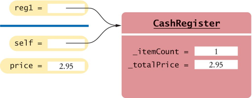
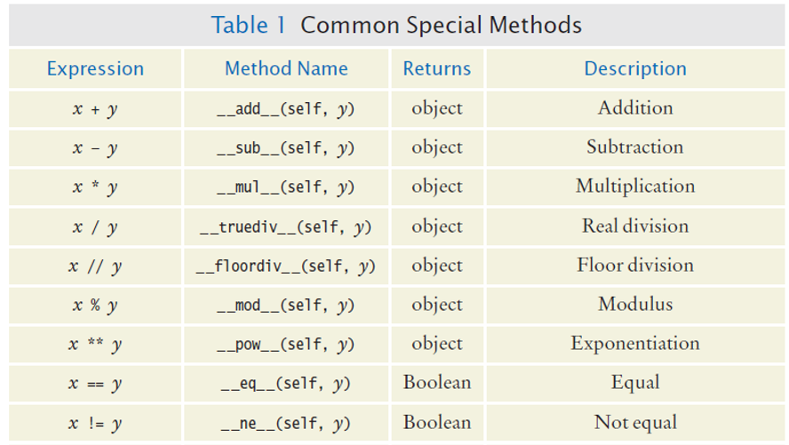
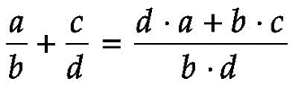

Chapter Nine
OBJECTS AND CLASSES
Chapter Goals
- To understand the concepts of classes, objects and encapsulation
- To implement instance variables, methods and constructors
- To be able to design, implement, and test your own classes
- To understand the behavior of object references
In this chapter, you will learn how to discover, specify, and implement your own classes, and how to use them in your programs.
Contents
- Object-Oriented Programming
- Implementing a Simple Class
- Specifying the Public Interface of a Class
- Designing the Data Representation
- Constructors
- Implementing Methods
- Testing a Class
- Problem Solving: Tracing Objects
- Problem Solving: Patterns for Object Data
- Object References
- Application: Writing a Fraction Class
Object-Oriented Programming
- You have learned structured programming
- Breaking tasks into subtasks
- Writing re-usable methods to handle tasks
- We will now study Objects and Classes
- To build larger and more complex programs
- To model objects we use in the world
A class describes objects with the same behavior. For example, a Car class describes all passenger vehicles that have a certain capacity and shape.
Objects and Programs
- You have learned how to structure your programs by decomposing tasks into functions
- Experience shows that it does not go far enough
- It is difficult to understand and update a program that consists of a large collection of functions
- To overcome this problem, computer scientists invented object-oriented programming, a programming style in which tasks are solved by collaborating objects
- Each object has its own set of data, together with a set of methods that act upon the data
Objects and Programs
- You have already experienced this programming style when you used strings, lists, and file objects; each of these objects has a set of methods
- For example, you can use the
insert()orremove()methods to operate on list objects
Python Classes
- A class describes a set of objects with the same behavior.
- For example, the
strclass describes the behavior of all strings - This class specifies how a string stores its characters, which methods can be used with strings, and how the methods are implemented
- For example, when you have a
strobject, you can invoke theupper method:
- For example, the
Python Classes
- In contrast, the
listclass describes the behavior of objects that can be used to store a collection of values - This class has a different set of methods
- For example, the following call would be illegal—the
listclass has noupper()method:
["Hello", "World"].upper()
- However,
listhas apop()method, and the following call is legal:
["Hello", "World"].pop()
Public Interfaces
- The set of all methods provided by a class, together with a description of their behavior, is called the public interface of the class
- When you work with an object of a class, you do not know how the object stores its data, or how the methods are implemented
- You need not know how a
strobject organizes a character sequence, or how a list stores its elements
- You need not know how a
- All you need to know is the public interface––which methods you can apply, and what these methods do
Public Interfaces
- The process of providing a public interface, while hiding the implementation details, is called encapsulation
- If you work on a program that is being developed over a long period of time, it is common for implementation details to change, usually to make objects more efficient or more capable
- When the implementation is hidden, the improvements do not affect the programmers who use the objects
Implementing a Simple Class
- Example:
- Tally Counter: A class that models a mechanical device that is used to count people
- For example, to find out how many people attend a concert or board a bus
- What should it do?
- Increment the tally
- Get the current total
Using the Counter Class
- First, we construct an object of the class (object construction will be covered shortly):
- In Python, you don't explicitly declare instance variables
- Instead, when one first assigns a value to an instance variable, the instance variable is created
tally = Counter() # Creates an instance
Using the Counter Class
- Next, we invoke methods on our object
tally.reset() tally.click() tally.click() result = tally.getValue() # Result is 2 tally.click() result = tally.getValue() # Result is 3
Instance Variables
- An object stores its data in instance variables
- An instance of a class is an object of the class
- In our example, each
Counterobject has a single instance variable named_value- For example, if
concertCounterandboardingCounterare two objects of theCounterclass, then each object has its own_valuevariable
- For example, if
Instance Variables
- Instance variables are part of the implementation details that should be hidden from the user of the class
- With some programming languages an instance variable can only be accessed by the methods of its own class
- The Python language does not enforce this restriction
- However, the underscore indicates to class users that they should not directly access the instance variables
Class Methods
- The methods provided by the class are defined in the class body
- The
click()method advances the_valueinstance variable by 1
def click(self) :
self._value = self._value + 1
- A method definition is very similar to a function with these exceptions:
- A method is defined as part of a class definition
- The first parameter variable of a method is called
self
Class Methods and Attributes
- Note how the
click()method increments the instance variable_value - Which instance variable? The one belonging to the object on which the method is invoked
- In the example below the call to
click()advances the_value variableof theconcertCounterobject - No argument was provided when the
click()method was called even though the definition includes theselfparameter variable
- The
selfparameter variable refers to the object on which the method was invokedconcertCounterin this example
- In the example below the call to
concertCounter.click()
Example of Encapsulation
- The
getValue()method returns the current_value:
def getValue(self) :
return self._value
- This method is provided so that users of the
Counterclass can find out how many times a particular counter has been clicked - A class user should not directly access any instance variables
- Restricting access to instance variables is an essential part of encapsulation
Complete Simple Class Example
# This program demonstrates the Counter class.
# Import the Counter class from the counter module.
from counter import Counter
tally = Counter()
tally.reset()
tally.click()
tally.click()
result = tally.getValue()
print("Value:", result)
tally.click()
result = tally.getValue()
print("Value:", result)
# This module defines the Counter class.
## Models a tally counter whose value can be incremented, viewed, or reset.
class Counter :
## Gets the current value of this counter.
# @return the current value
def getValue(self) :
return self._value
## Advances the value of this counter by 1.
def click(self) :
self._value = self._value + 1
## Resets the value of this counter to 0.
def reset(self) :
self._value = 0
Program Run
Value: 2 Value:3
Public Interface of a Class
- When you design a class, start by specifying the public interface of the new class
- What tasks will this class perform?
- What methods will you need?
- What parameters will the methods need to receive?
Example of a Public Interface
- A Cash Register Class
- Since the
selfparameter is required for all methods it was excluded for simplicity
Writing the Public Interface
## A simulated cash register that tracks the item count and the total amount due.
#
class CashRegister :
## Adds an item to this cash register.
# @param price: the price of this item
#
def addItem(self, price) :
# Method body
. . .
## Gets the price of all items in the current sale.
# @return the total price
#
def getTotal(self):
# Method body
. . .
Class comments document the class and the behavior of each method
The method declarations make up the public interface of the class
The data and method bodies make up the private implementation of the class
Using the Class
- After defining the class we can now construct an object:
register1 = CashRegister() # Constructs a CashRegister object
- This statement defines the
register1variable and initializes it with a reference to a newCashRegisterobject
Using Methods
- Now that an object has been constructed, we are ready to invoke a method:
register1.addItem(1.95) # Invokes a method.
Accessor and Mutator Methods
- Many methods fall into two categories:
1) Accessor Methods: 'get' methods
- Asks the object for information without changing it
- Normally returns the current value of an attribute
- Changes values in the object
- Usually take a parameter that will change an instance variable
- Each object of a class has a separate set of instance variables
- An object stores data in instance variables
- Variables declared inside the class
- All methods inside the class have access to them
- Can change or access them
- What data will our
CashRegistermethods need?
- All instance variables should be private and most methods should be public
- Although most object-oriented languages provide a mechanism to explicitly hide or protect private members from outside access, Python does not
- It is common practice among Python programmers to use names that begin with a single underscore for private instance variables and methods
- The single underscore serves as a flag to the class user that those members are private
- You should always use encapsulation, in which all instance variables are private and are only manipulated with methods
- Typically, methods are public
- However, sometimes you have a method that is used only as a helper method by other methods
- In that case, you should identify the helper method as private by using a name that begins with a single underscore
- A constructor is a method that initializes instance variables of an object
- It is automatically called when an object is created
- Python uses the special name
_ _init_ _for the constructor because its purpose is to initialize an instance of the class - Only one constructor can be defined per class
- But you can define a constructor with default argument values that simulate multiple definitions
- If no value is passed to the constructor when a
BankAccountobject is created the default value will be used - If a value is passed to the constructor that value will be used instead of the default one
- Default arguments can be used in any method and not just constructors
- The first parameter variable of every constructor must be
self - When the constructor is invoked to construct a new object, the
selfparameter variable is set to the object that is being initialized - This reference then allows methods of the object to be invoked
- After an object has been constructed, you should not directly call the constructor on that object again:
- The constructor can set a new
CashRegisterobject to the cleared state, but you should not call the constructor on an existing object. Instead, replace the object with a new one: - Implementing a method is very similar to implementing a function except that you access the instance variables of the object in the method body
- Use instance variables inside methods of the class
- Similar to the constructor, all other instance methods must include the
selfparameter as the first parameter - You must specify the
selfimplicit parameter when using instance variables inside the class
- Similar to the constructor, all other instance methods must include the
- As with the constructor, every method must include the special
selfparameter variable, and it must be listed first - When a method is called, a reference to the object on which the method was invoked (
register1) is automatically passed to theselfparameter variable: - To access an instance variable, such as
_itemCountor_totalPrice, in a method, you must access the variable name through theselfreference- This indicates that you want to access the instance variables of the object on which the method is invoked, and not those of some other
CashRegisterobject
- This indicates that you want to access the instance variables of the object on which the method is invoked, and not those of some other
- The first statement in the
addItem()method isself._itemCount = self._itemCount + 1
- Which
_itemCountis incremented?- In this call, it is the
_itemCountof theregister1object.
- In this call, it is the
- When one method needs to call another method on the same object, you invoke the method on the
selfparameter - Instance variables should only be defined in the constructor
- All variables, including instance variables, are created at run time
- There is nothing to prevent you from creating instance variables in any method of a class
- The constructor is invoked before any method can be called, so any instance variables that were created in the constructor are sure to be available in all methods
- They are a value properly belongs to a class, not to any object of the class
- Class variables are often called "static variables"
- Class variables are declared at the same level as methods
- In contrast, instance variables are created in the constructor
- We want to assign bank account numbers sequentially: the first account is assigned number 1001, the next with number 1002, and so on
- To solve this problem, we need to have a single value of
_lastAssignedNumberthat is a property of the class, not any object of the class - Every
BankAccountobject has its own_balanceand_account-Numberinstance variables, but there is only a single copy of the_lastAssignedNumbervariable - That variable is stored in a separate location, outside any
BankAccountobject - Like instance variables, class variables should always be private to ensure that methods of other classes do not change their values. However, class constants can be public
- For example, the
BankAccountclass can define a public constant value, such as - Methods from any class can refer to such a constant as
BankAccount.OVERDRAFT_FEE - In the long run, your class may become a part of a larger program that interacts with users, stores data in files, and so on
- You should always test your class in isolation integrating a class into a program
- Testing in isolation, outside a complete program, is called unit testing
- Some interactive development environments provide access to the Python shell in which individual statements can be executed
- You can test a class simply by constructing an object, calling methods, and verifying that you get the expected return values
- Interactive testing is quick and convenient but it has a drawback
- When you find and fix a mistake, you need to type in the tests again
- As your classes get more complex, you should write tester programs
- A tester program is a driver module that imports the class and contains statements to run methods of your class
- Construct one or more objects of the class that is being tested
- Invoke one or more methods
- Print out one or more results
- Print the expected results
- Compare the computed results with the expected
- It runs and tests the methods of the
CashRegisterclass - Thinking about the sample program:
- We add three items totaling $5.40
- When displaying the method results, we also display messages that describe the values we expect to see
- This is a very important step. You want to spend some time thinking about what the expected result is before you run a test program
- This thought process will help you understand how your program should behave, and it can help you track down errors at an early stage
- You need to import the class you are testing (here, the
CashRegisterclass) into the driver module: - The specific details for running the program depend on your development environment
- There is a hidden responsibility as well. We need to be able to find out how much money is in the account
- Constructors
def __init__(self, initialBalance = 0.0) :
- Mutators
def deposit(self, amount) : def withdraw(self, amount) : def addInterest(self, rate) :
- Accessors
def getBalance(self) :
- Use an index card for each object:
- An object is manipulated through the public interface (front of the card)
- The encapsulated data is on the back of the card
- As mutator methods are called, keep track of the value of instance variables
- Common patterns when designing instance variables
- Keeping a Total
- Counting Events
- Collecting Values
- Managing Object Properties
- Modeling Objects with Distinct States
- Describing the Position of an Object
- Examples:
- Bank account balance
- Cash register total
- Car gas tank fuel level
- Variables needed:
totalPrice
- Methods Required:
add (addItem)cleargetTotal
- Examples:
- Cash register items
- Bank transaction fee
- Variables needed:
itemCount
- Methods Required:
- Add
- Clear
- Optional:
getCount
- Examples:
- Multiple choice question
- Shopping cart
- Storing values:
- List
- Constructor:
- Initialize to empty collection
- Methods Required:
- Add
- Examples:
- Student:
name,ID
- Student:
- Constructor:
- Set a unique value
- Methods Required:
setget
- Example: A fish
- Hunger states:
- Not Hungry
- Somewhat Hungry
- Very Hungry
- Methods will change the state:
eatmove
- Hunger states:
- Examples:
- Game object
- Bug (on a grid)
- Cannonball
- Storing values:
row,column,direction,speed. . .
- Methods Required:
moveturn
- In Python, a variable does not actually hold an object
- It merely holds the memory location of an object
- The object itself is stored in another location:
- Multiple object variables may contain references to the same object ('aliases')
- Single Reference
- Shared References
- Checking if references are aliases, use the
is, or thenot isoperator: - Checking if the data contained within objects are equal use the
==operator: - A reference may point to 'no' object
- You cannot invoke methods of an object via a
Nonereference – causes a run-time error:
- You cannot invoke methods of an object via a
- To test if a reference is
Nonebefore using it: - Every method has a reference to the object on which the method was invoked, stored in the
selfparameter variable- It is a reference to the object the method was invoked on:
- It can clarify when instance variables are used:
- You can also invoke a method on
self: - In a constructor,
selfis a reference to the object that is being constructed - The
clear()method is invoked on that object - Suppose, for example, you have a
Personclass with a methodlikes(self, other)that checks, perhaps from a social network, whether a person likes another - When you construct an object with a constructor, the object is created, and the
selfvariable of the constructor is set to the memory location of the object- Initially, the object contains no instance variables.
- As the constructor executes statements such as instance variables are added to the object
- Finally, when the constructor exits, it returns a reference to the object, which is usually captured in a variable:
- The object, and all of its instance variables, stays alive as long as there is at least one reference to it
- When an object is no longer referenced at all, it is eventually removed by a part of the virtual machine called the "garbage collector"
- So far we have worked with floating-point numbers but computers store binary values, so not all real numbers can be represented precisely
- In applications where the precision of real numbers is important, we can use rational numbers to store exact values
- This helps to reduce or eliminate round-off errors that can occur when performing arithmetic operations
- A rational number is a number that can be expressed as a ratio of two integers: 7/8
- The top value is called the numerator and the bottom value, which cannot be zero, is called the denominator
- We want to use our rational numbers as we would use integers and floating point values
- Thus, our Fraction class must perform the following operations:
- Create a rational number
- Access the numerator and denominator values, individually
- Determine if the rational number is negative or zero
- Perform normal mathematical operations on two rational numbers (addition, subtraction, multiplication, division, exponentiation)
- Logically compare two rational numbers
- Produce a string representation of the rational number
- The objects of the Fraction class will be immutable because none of the operations modify the objects' instance variables
- Because a rational number consists of two integers, we need two instance variables to store those values:
- At no time should the rational number be converted to a floating-point value or we will lose the precision gained from working with rational numbers
- Signed values
- Negative and positive rational numbers each have two forms that can be used to specify the corresponding value
- Positive values can be indicated as 1/2 or –1/–2, and negative values as –2/5 or 2/–5
- When performing an arithmetic operation or logically comparing two rational numbers, it will be much easier if we have a single way to represent a negative value
- For simplicity, we choose to set only the numerator to a negative value when the rational number is negative, and both the numerator and denominator will be positive integers when the rational number is positive
- Equivalent fractions
- For example, 1/4 can be written as 1/4, 2/8, 16/64, or 123/492
- It will be much easier to perform the operation if the number is stored in reduced form
- Because Fraction objects are immutable, their values must be set when they are created. This requires parameter variables for both the numerator and denominator
- The method must check for special cases:
- Zero denominators
- The number represents zero or a negative number
- In Python, we can define and implement methods that will be called automatically when a standard Python operator (
+,*,==,<) is applied to an instance of the class - For example, to test whether two fractions are equal, we could implement a method:
isequal()and use it as follows:
- Of course, we would prefer to use the operator:
== - This is achieved by defining the special method:
_ _eq_ _(): - Automatically calls this method when we compare two Fraction objects using the
==operator: - Some special methods are called when an instance of the class is passed to a built-in function. For example, suppose you attempt to convert a Fraction object to a floating point number using the
float()function: - Then the
_ _float_ _()special method is called - Here is a definition of that method:
- All of the arithmetic operations that can be performed on a Fraction object should return the result in a new Fraction object
- For example, when the statement below is executed,
frac1should be added tofrac2and the result returned as a new Fraction object that is assigned to thenewFracvariable - From elementary arithmetic, you know that two fractions must have a common denominator in order to add them. If they do not have a common denominator, we can still add them using the formula:
- Note that a / b < c / d when d · a < b · c (Multiply both sides with b · d)
- Based on this observation, the less than operation is implemented by the
_ _lt_ _()method as follows: - To ensure that, Python provides the built-in
isinstance()function that can be used to check the type of object referenced by a variable - For example, the constructor for the Fraction class requires two integers
- A class describes a set of objects with the same behavior
- Every class has a public interface: a collection of methods through which the objects of the class can be manipulated
- Encapsulation is the act of providing a public interface and hiding the implementation details
- Encapsulation enables changes in the implementation without affecting users of a class
- An object's instance variables store the data required for executing its methods
- Each object of a class has its own set of instance variables
- An instance method can access the instance variables of the object on which it acts
- A private instance variable should only be accessed by the methods of its own class
- Class variables have a single copy of the variable shared among all of the instances of the class
- Method Headers
- You can use method headers and method comments to specify the public interface of a class
- A mutator method changes the object on which it operates
- An accessor method does not change the object on which it operates
- Data Representation
- For each accessor method, an object must either store or compute the result
- Commonly, there is more than one way of representing the data of an object, and you must make a choice
- Be sure that your data representation supports method calls in any order
- A constructor initializes the object's instance variables
- A constructor is invoked when an object is created
- The constructor is defined using the special method name:
_ _init_ _() - Default arguments can be used with a constructor to provide different ways of creating an object
- The object on which a method is applied is automatically passed to the
selfparameter variable of the method - In a method, you access instance variables through the
selfparameter variable - A unit test verifies that a class works correctly in isolation, outside a complete program
- To test a class, use an environment for interactive testing, or write a tester class to execute test instructions
- Determining the expected result in advance is an important part of testing
- Object tracing is used to visualize object behavior
- Write the methods on the front of a card, and the instance variables on the back
- Update the values of the instance variables when a mutator method is called
- An instance variable for the total is updated in methods that increase or decrease the total amount
- A counter that counts events is incremented in methods that correspond to the events
- An object can collect other objects in a list
- An object property can be accessed with a getter method and changed with a setter method
- If your object can have one of several states that affect the behavior, supply an instance variable for the current state
- To model a moving object, you need to store and update its position
- An object reference specifies the location of an object
- Multiple object variables can contain references to the same object
- Use the
isandis notoperators to test whether two variables are aliases - The
Nonereference refers to no object - To use a standard operator with objects, define the corresponding special method
- Define the special
_ _repr_ _()method to create a string representation of an object
def getTotal(self): def getCount(self):
2) Mutator Methods: 'set' methods
def addItem(self, price): def clear(self):
Instance Variables of Objects
The values stored in instance variables make up the state of the object
Designing the Data Representation
An object holds instance variables that are accessed by methods
Programming Tip 9.1
Programming Tip 9.1
Constructors
# Calling a method that matches the name of the class # invokes the constructor register = CashRegister()
def _ _init_ _(self) : self._itemCount = 0 self._totalPrice = 0Default and Named Arguments
class BankAccount : def __init__(self, initialBalance = 0.0) : self._balance = initialBalancejoesAccount = BankAccount() # Balance is set to 0
Default and Named Arguments
joesAccount = BankAccount(499.95) # Balance is set to 499.95
Syntax: Constructors
Constructors:
self
Refers to the object being initialized
def _ _init_ _(self) : self._itemCount = 0 self._totalPrice = 0register = CashRegister()
After the constructor ends this is a reference to the newly created object
Object References
register = CashRegister()
After the constructor ends this is a reference to the newly created object
print("Your total $", register.getTotal())Call the method through the reference
Common Error 9.1 (1)
register1 = CashRegister() register1._ _init_ _() # Bad style
Common Error 9.1 (2)
register1 = CashRegister() register1 = CashRegister() # OK
In general, you should never call a Python method that starts with a double underscore. The are intended for specific internal purposes (in this case, to initialize a newly created object).
Implementing Methods
def addItem(self, price): self._itemCount = self._itemCount + 1 self._totalPrice = self._totalPrice + price
Syntax: Instance Methods
Invoking Instance Methods
Tracing The Method Call
register1 = CashRegister() #1 New object register1.addItem(2.95) #2 Calling method … #3 After method
def addItem(self, price): self._itemCount = self._itemCount + 1 self._totalPrice = self._totalPrice + priceAccessing Instance Variables
Accessing Instance Variables

Calling One Method Within Another
def addItems(self, quantity, price) : for i in range(quantity) : self.addItem(price)Example:
CashRegister.py(1)
## # This module defines the CashRegister class. # ## A simulated cash register that tracks the item count and the total amount due. # class CashRegister : ## Constructs a cash register with cleared item count and total. # def __init__(self) : self._itemCount = 0 self._totalPrice = 0.0 ## Adds an item to this cash register. # @param price the price of this item # def addItem(self, price) : self._itemCount = self._itemCount + 1 self._totalPrice = self._totalPrice + price ## Gets the price of all items in the current sale. # @return the total price # def getTotal(self) : return self._totalPrice ## Gets the number of items in the current sale. # @return the item count # def getCount(self) : return self._itemCount ## Clears the item count and the total. # def clear(self) : self._itemCount = 0 self._totalPrice = 0.0Programming Tip 9.2
Class Variables
Class Variables: Example (1)
class BankAccount : _lastAssignedNumber = 1000 # A class variable def _ _init_ _(self) : self._balance = 0 BankAccount._lastAssignedNumber = BankAccount._lastAssignedNumber + 1 self._accountNumber = BankAccount._lastAssignedNumberClass Variables: Example (2)
Class Variables: Example (3)
class BankAccount : OVERDRAFT_FEE = 29.95 . . .Testing a Class
Choices for Testing: The Python Shell
>>> from cashregister import CashRegister >>> reg = CashRegister() >>> reg.addItem(1.95) >>> reg.addItem(0.95) >>> reg.addItem(2.50) >>> print(reg.getCount()) 3 >>> print(reg.getTotal()) 5.4 >>>
Choices for Testing: Test Drivers
Steps Performed by a Tester Program
Example Test Program
## # This program tests the CashRegister class. # from cashregister import CashRegister register1 = CashRegister() register1.addItem(1.95) register1.addItem(0.95) register1.addItem(2.50) print(register1.getCount()) print("Expected: 3") print("%.2f" % register1.getTotal()) print("Expected: 5.40")Program Run
3 Expected: 3 5.40 Expected: 5.40
Test Drivers: Plan Beforehand
Test Drivers: Using Modules
from cashregister import CashRegister
Steps to Implementing a Class
1) Get an informal list of responsibilities for your objects
Deposit funds Withdraw funds Add interest
Get balance
Steps to Implementing a Class
2) Specify the public interface
3) Document the public interface
## Constructs a bank account with a given balance. # @param initialBalance the initial account balance (default = 0.0) #
Steps to Implementing a Class
4) Determine the instance variables
self._balance = initialBalance
5) Implement constructors and methods
def getBalance(self) : return self._balance
6) Test your class
Problem Solving: Tracing Objects
Mutator Methods and Cards
register2 = CashRegister(7.5) # 7.5 percent sales tax register2.addItem(3.95, False) # Not taxable register2.addItem(19.95, True) # Taxable
Problem Solving: Patterns for Object Data
Patterns: Keeping a Total
class CashRegister : def addItem(self, price): self._itemCount = self._itemCount + 1 self._totalPrice = self._totalPrice + price def clear(self): self._itemCount = 0 self._totalPrice = 0.0 def getTotal(self): return self._totalPricePatterns: Counting Events
class CashRegister: def addItem(self, price): self._itemCount = self._itemCount + 1 self._totalPrice = self._totalPrice + price def clear(self): self._itemCount = 0 self._totalPrice = 0.0 def getCount(self): return self._itemCountPatterns: Collecting Values
class Cart: def _ _init_ _(self) : self._choices = [] def addItem(self, name) : self._choices.append (choice)Patterns: Managing Properties
A property of an object can be set and retrieved
class Student : def _ _init_ _ (self, aName, anId) : self._name = aName self._id = anId def getName(self) : return self._name def setName(self, newName) : self._name = newName def getId(self) : return self._id # No setId methodPatterns: Modeling Object States
Some objects can be in one of a set of distinct states
class Fish: NOT_HUNGRY = 0 SOMEWHAT_HUNGRY = 1 VERY_HUNGRY = 2 def eat(self) : self._hungry = Fish.NOT_HUNGRY def move(self) : if self._hungry < Fish.VERY_HUNGRY : self._hungry = self._hungry + 1Patterns: Object Position
class Bug: def _ _init_ _ (self, aRow, aColumn, aDirection, speed) : self._row = aRow self._column = aColumn self._direction = direction # 0 = N, 1 = E, 2 = S, 3 = W . . . def moveOneUnit(self): if (self._direction == 0): self._row = self._row - 1 . . .Object References
reg1 = CashRegister
The constructor returns a reference to the new object, and that reference is stored in thereg1variableReference
Object
Shared References
reg1 = CashRegister
reg2 = reg1
The internal values can be changed through either reference
Testing If References are Aliases
if reg1 is reg2 : print("The variables are aliases.") if reg1 is not reg2 : print("The variables refer to different objects.")if reg1 == reg2 : print("The objects contain the same data.")The
Nonereference
reg = None print(reg.getTotal()) # Runtime Error!
middleInitial = None # No middle initial if middleInitial is None : print(firstName, lastName) else : print(firstName, middleInitial + ".", + lastName)
The
selfreference
def addItem(self, price): self.itemCount = self.itemCount + 1 self.totalPrice = self.totalPrice + price
Using
selfto Invoke Other Methods
def _ _init_ _(self) : self.clear()Passing
selfas a Parameter
def isFriend(self, other) : return self.likes(other) and other.likes(self)Object Lifetimes: Creation
self._itemCount = 0
reg1 = CashRegister()
Object Lifetimes: Cleaning Up
reg1 = CashRegister() # New object referenced by reg1 reg1 = CashRegister() # Another object referenced by reg1 # First object will be garbage collected
Writing a Fraction Class
Designing the Fraction Class
Required Data Attributes
self._numerator = 0 self._denominator = 1
Representing Values Equivalently
Representing Values Equivalently
The Constructor (1)
def _ _init_ _(self, numerator, denominator) :
The Constructor (2)
def _ _init_ _(self, numerator = 0, denominator = 1) : if denominator == 0 : raise ZeroDivisionError("Denominator cannot be zero.") if numerator == 0 : self._numerator = 0 self._denominator = 1 else : if (numerator < 0 and denominator >= 0 or numerator >= 0 and denominator < 0) : sign = -1 else : sign = 1The Constructor (3)
a = abs(numerator) b = abs(denominator) while a % b != 0 : tempA = a tempB = b a = tempB b = tempA % tempB self._numerator = abs(numerator) # b * sign self._denominator = abs(denominator) #bTesting the Constructor
frac1 = Fraction(1, 8) # Stored as 1/8 frac2 = Fraction(-2, -4) # Stored as 1/2 frac3 = Fraction(-2, 4) # Stored as -1/2 frac4 = Fraction(3, -7) # Stored as -3/7 frac5 = Fraction(0, 15) # Stored as 0/1 frac6 = Fraction(8, 0) # Error! exception is raised
Comparing Fractions (1)
if frac1.isequal(frac2) : print("The fractions are equal.")Comparing Fractions (2)
def _ _eq_ _(self, rhsValue) : return (self._numerator == rhsValue.numerator and self._denominator == rhsValue.denominator)if frac1 == frac2 : # Calls frac1._ _eq_ _(frac2) print("The fractions are equal.")Special Methods
x = float(frac1)
def _ _float_ _(self) : return self._numerator / self._denominatorCommon Special Methods
Common Special Methods
Addition of Fractions
newFrac = frac1 + frac2
Fractional Addition
Defining the Method For Addition
def _ _add_ _(self, rhsValue) : num = (self._numerator * rhsValue._denominator + self._denominator * rhsValue._numerator) den = self._denominator * rhsValue._denominator return Fraction(num, den)Logic: Less Than
def _ _lt_ _(self, rhsValue) : return (self._numerator * rhsValue._denominator self._denominator * rhsValue._numerator)fraction.py
## # This module defines the Fraction class. # ## Defines an immutable rational number with common arithmetic operations. # class Fraction : ## Constructs a rational number initialized to zero or a user specified value. # @param numerator the numerator of the fraction (default is 0) # @param denominator the denominator of the fraction (cannot be 0) # def __init__(self, numerator = 0, denominator = 1) : # The denominator cannot be zero. if denominator == 0 : raise ZeroDivisionError("Denominator cannot be zero.") # If the rational number is zero, set the denominator to 1. if numerator == 0 : self._numerator = 0 self._denominator = 1 # Otherwise, store the rational number in reduced form. else : # Determine the sign. if (numerator < 0 and denominator >= 0 or numerator >= 0 and denominator < 0) : sign = -1 else : sign = 1 # Reduce to smallest form. a = abs(numerator) b = abs(denominator) while a % b != 0 : tempA = a tempB = b a = tempB b = tempA % tempB self._numerator = abs(numerator) // b * sign self._denominator = abs(denominator) // bfraction.py
## Adds a fraction to this fraction. # @param rhsValue the right-hand side fraction # @return a new Fraction object resulting from the addition # def __add__(self, rhsValue) : num = (self._numerator * rhsValue._denominator + self._denominator * rhsValue._numerator) den = self._denominator * rhsValue._denominator return Fraction(num, den) ## Subtracts a fraction from this fraction. # @param rhsValue the right-hand side fraction # @return a new Fraction object resulting from the subtraction # def __sub__(self, rhsValue) : num = (self._numerator * rhsValue._denominator - self._denominator * rhsValue._numerator) den = self._denominator * rhsValue._denominator return Fraction(num, den) ## Determines if this fraction is equal to another fraction. # @param rhsValue the right-hand side fraction # @return True if the fractions are equal # def __eq__(self, rhsValue) : return (self._numerator == rhsValue._numerator and self._denominator == rhsValue._denominator)fraction.py
## Determines if this fraction is less than another fraction. # @param rhsValue the right-hand side fraction # @return True if if this fraction is less than the other # def __lt__(self, rhsValue) : return (self._numerator * rhsValue._denominator < self._denominator * rhsValue._numerator) ## Determines if this fraction is not equal to another fraction. # @param rhsValue the right-hand side fraction # @return True if the fractions are not equal # def __ne__(self, rhsValue) : return not self == rhsValue ## Determines if this fraction is less than or equal to another fraction. # @param rhsValue the right-hand side fraction # @return True if if this fraction is less than or equal to the other # def __le__(self, rhsValue) : return not rhsValue < self ## Determines if this fraction is greater than another fraction. # @param rhsValue the right-hand side fraction # @return True if if this fraction is greater than the other # def __gt__(self, rhsValue) : return rhsValue < self ## Determines if this fraction is greater than or equal to another fraction. # @param rhsValue the right-hand side fraction # @return True if if this fraction is greater than or equal to the other # def __ge__(self, rhsValue) : return not self < rhsValuefraction.py
## Converts a fraction to a floating-point number. # @return the floating-point value of this fraction # def __float__(self) : return self._numerator / self._denominator ## Gets a string representation of the fraction. # @return a string in the format #/# # def __repr__(self) : return str(self._numerator) + "/" + str(self._denominator)Checking Type
class Fraction : def _ _init_ _(self, numerator, denominator) : if (not isinstance(numerator, int) or not isinstance(denominator, int)) : raise TypeError ("The numerator and denominator must be integers.")Summary: Classes and Objects
Summary: Variables and Methods
Summary: Method Headers, Data
Summary: Constructors
Summary: Method Implementation
Summary: Testing Classes
Summary: Object Tracing
Summary: Patterns for Classes
Summary: Patterns for Classes
Summary: Object References
Summary: Defining Special Methods